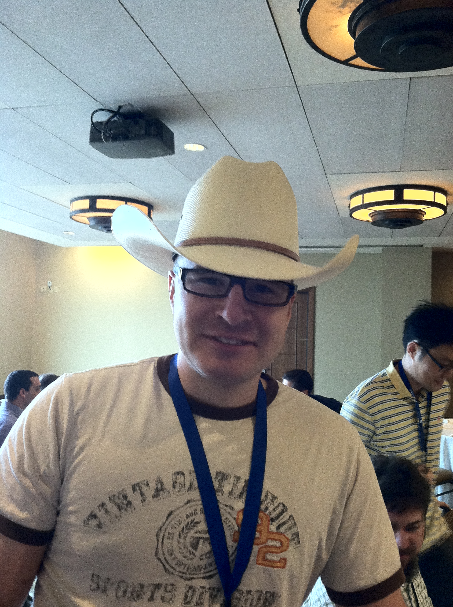

SciPy 2013
Posted:
This past week was the 2013 SciPy conference. It was an exciting time, and a lot of interesting things happened.
First, a background. This summer, I have been doing an internship with Continuum Analytics. There I have been working mainly on Anaconda and conda. Anaconda is Continuum's free (to everyone) Python distribution, which makes it really easy to get bootstrapped with all the scientific software (including SymPy). Conda is Anaconda's package manager, which, I think, solves many if not all of the main issues with the Python packaging tools like pip, easy_install, PyPI, and virtualenv.
I may write more about that later, but for now, I want to write about my experiences at the conference. The main point there is that I have already been in Austin for about a month, so getting to the conference this year was pretty easy.
On the first day of the conference, on Monday morning, Ondrej Certik and I had our tutorial for SymPy. For the past couple of months, I have been rewriting the official SymPy tutorial from scratch. The official tutorial for SymPy was very old, and had many issues. It only went over features that were good at the time of its writing, so while nothing in the tutorial was wrong, it didn't really represent the latest and greatest of the library. Also, it was written just like a list of examples, which is not much more than the API docs. In my new tutorial, I aimed to give a narrative style documentation, which starts from the very beginning of what symbolics are and works its way up to the basic functionality of things like solving and simplifying expressions. My goal was also to lead by example, and in particular, to avoid teaching things that I think either are antipatterns, or lead to antipatterns. In Python, there is one-- and preferably only one --way to do it. In SymPy, by the nature of the library, there are about seven different ways to create a Symbol, for example (see https://github.com/sympy/sympy/wiki/Idioms-and-Antipatterns, the section, "Creating Symbols"). But there is one best way to do it: by using symbols(). So all throughout the tutorial, I just use symbols(), even if I am creating a single Symbol. I avoid messy things like var.
The final tutorial is at http://docs.sympy.org/tutorial/tutorial/. This was the basis for the tutorial that Ondrej and I gave at SciPy. The site for our tutorial is at http://certik.github.io/scipy-2013-tutorial/html/index.html. There are links to videos, slides, and exercise notebooks there.
I think our tutorial was a great success. People liked (I think) the introduction from nothing to SymPy. For our exercises, we used the IPython Doctester. I think that people really liked this way of doing exercises, but there were some issues getting it to work on everyone's machine.
In addition to my stuff, Ondrej presented some notebooks of examples of work that he has used in his work at LANL. I think this worked well. There were several physicists in the audience, who understood most of the content, but even for those who weren't (including me!), it really showed that SymPy is a useful tool. In a beginner tutorial, it is easy to get lost in the easy details, and forget that in the end, you can actually use SymPy to compute some powerful things. SymPy has in the past year or two really passed the barrier of toy to tool.
After our tutorial, I attended the IPython tutorial, and the two-part Scikit-Learn tutorial. The most awesome part of this was just getting to meet people. Fernando Perez, Thomas Kluyver, and Brian Granger of IPython were at the conference. Brain is also a SymPy developer, who has spearheaded the quantum module. From SymPy, in addition to Ondrej (who created SymPy), I met Matthew Rocklin, one of the top contributors, Jason Moore, one of the developers of PyDy, which uses SymPy's mechanics module, and David Li, who works on SymPy Gamma and SymPy Live (more on these people later).
After the tutorials, Wednesday and Thursday were the talks. There were a lot of good ones. Here are the ones that I remember the most
- Fernando's keynote. If you've ever seen one of Fernando's talks, you know that he is a great speaker.
- Matthew's talk. His talk was about his work on using SymPy's matrix expressions to compile expressions for BLAS/LAPACK. This talk excited many people in the audience. I think this is great, because it shows people some of the real power of things you can only do with symbolics.
- Jason Moore's talk about PyDy and the mechanics module. He ran out of time, but there is a nice example of using SymPy to generate a controller for an inverted triple pendulum, which seems impossible, but then he shows a video of an actual thing that can do it.
- William Schroeder's keynote. The message was that the academic model is broken, and doesn't lead to reproducible research. While they are fixing things, the message is that we are the new publishers. There was also mention at the end that we should stop using noncommercial licenses, and stop using viral licenses like the GPL and LGPL. I was a little surprised to hear such a controversial statement, but it's actually very true, and I agree with him that if people don't stop using the GPL, then we will never achieve openness in science.
- David Li's talk. David Li is a high school student (starting his senior year in the fall), who started with SymPy two years ago with Google Code-In. He has continued working on SymPy Live, and SymPy Gamma since. He is the reason that we have SymPy Live in our docs. His talk was also well received. David is a good speaker, and SymPy Gamma and SymPy Live are pretty cool (for those of you who don't know, SymPy Live is an online shell where you can run a Python session with SymPy in the browser, and SymPy Gamma is the SymPy version of WolframAlpha).
- Brian Granger's talk. His talk is entitled "Why you should write buggy software with as few features as possible". I think he had some good messages in there. You have to reduce the scope of your project, or it will get out of hand. As for bugs, getting bug reports is a good thing, because it shows that people are using the software, and what parts of it they are using.
- The lightning talks. Especially Matthew Rocklin's lightning talk. His talk was about splitting things up into very small packages, so that you don't have to get a huge package just for one function. He went a little far with it, and I think his ideas aren't really usable in the current Python packaging ecosystem, but, taken in moderation, I agree with him. At any rate, it was very entertaining (I don't have any video links here because they aren't posted yet, but I encourage you to watch the lightning talks once they are posted).
- I heard the matplotlib talk was good, but I haven't seen it because it was at the same time as Matthew's talk. I plan to watch it when the videos come out. If you saw it, I encourage you to watch Matthew's talk, especially if you've ever used BLAS/LAPACK.
Topping off the week were the sprints on Friday and Saturday. My goal was to get out a release of SymPy. We didn't quite get that far, but we got close. We are only blocking on a few small things to get out a release candidate, so expect one before the end of the week. We did introduce a lot of people to SymPy at the sprints, though, and got some first time contributions. Definitely I think we made a lot more people aware of SymPy at this conference than we ever have before.
Another interesting thing at the sprints: before the conference, I was telling David Li that we should switch to Dill for SymPy Live (the way SymPy Live works on the App Engine, it has to pickle the session between runs, because there is a 60 time limit on each execution). Dill is a library that extends Python's pickle so that it can pickle just about anything. At the end of David's talk, the guy who wrote Dill, Mike McKerns raised his hand and asked him about it! At the sprints, David and he worked together to get it working in SymPy Live (and coincidentally, he also uses SymPy in another package, mystic). There were some fixes needed for Dill. He also moved Dill out of a larger project (in the spirit of Matthew's lightning talk), and over to GitHub. Now all they need is a logo (Paul Ivanov suggested a variation on "we can pickle that!").
In all, it was a fun conference. The best part, as always, was meeting people in person, and talking to them. To conclude, I want to mention two other interesting things that happened.
The first is that Matthew and I talked seriously about how to go about fixing the assumptions in SymPy. I will write to the list about this soon, but the basic idea is to just get in there and hack things together, so that we can get something that works. The work there is started at https://github.com/sympy/sympy/pull/2210, where I am seeing if we can merge the old and new assumptions, so that something assumed in one can be asked in the old one.
The second thing is that Ondrej got a new hat: {kind=link}